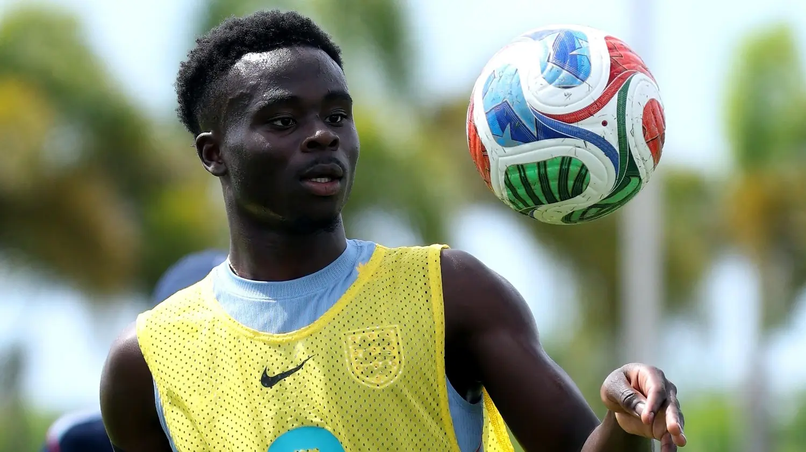
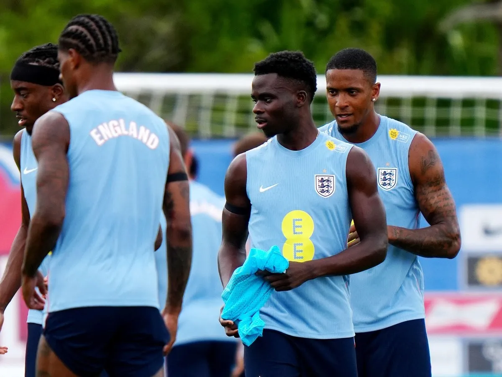

England Star Bukayo Saka Plays Through Achilles Injury Ahead of 2026 World Cup





England manager Thomas Tuchel confirmed that Bukayo Saka is playing through an Achilles injury as the national team ramps up preparations for the 2026 FIFA World Cup. The Arsenal winger remains one of England's key attacking threats but is not yet fully fit. Tuchel said Saka has been managing discomfort for some time and cannot take part in every training session or play full matches consistently.
Saka joined England's camp later than some teammates following his Champions League final duties. Both Arsenal and England medical teams are closely monitoring his workload. Tuchel stressed that while Saka is available for selection, his minutes will need careful management to prevent aggravating the injury. The winger is still capable of producing moments of high quality, but he is not yet operating at full capacity.
The update raises questions ahead of the tournament with Saka seen as key to England's attacking plans. Tuchel emphasized protecting his long-term fitness and suggested that England may have to carefully manage his minutes throughout the competition. Balancing immediate performance with the demands of a long tournament remains a key challenge.

Controlled Approach in Training
England's staff are taking a cautious approach with Saka. Tuchel said the winger cannot currently play full 90-minute matches and is unlikely to start and finish every game during the World Cup. The focus is on gradually building his fitness while keeping him available for key matches.
Saka will remain involved in preparations, including the final warm-up against Costa Rica. Tuchel noted that other players, including Declan Rice, Noni Madueke, and Eberechi Eze, have also required careful reintegration after demanding club seasons. However, Saka's situation demands the most attention due to the ongoing Achilles issue.
Medical staff are working with coaches to determine how much Saka should participate in training and games. The aim is for him to be at his best for the World Cup and avoid any relapses. Tuchel's words suggest England will be more adaptable in how they rotate their squad and deploy their players.
Alternatives and Squad Depth
Given Saka's fitness concerns, Tuchel admitted that England may need to rely on other attacking options. Players such as Morgan Rogers, Marcus Rashford and Noni Madueke could fill in on the right wing if Saka needs a rest.
Tuchel stressed that the team's success is contingent on the squad as a whole, not just one player. Saka remains an integral part of the Three Lions team but England have the quality to get through injuries and fitness issues There is a fierce contest for attacking roles including the one behind striker Harry Kane Morgan Rogers Jude Bellingham and Eberechi Eze all in the mix
Tuchel used the situation to reinforce the importance of squad unity. All players must be ready to contribute, regardless of whether they start. He said major tournaments are often decided by depth and adaptability, not just star performers. England's coaching staff continue evaluating how to balance Saka's influence with the need to preserve his fitness.

Saka Still Central to England's Plans
Despite the injury, Tuchel made clear that Saka remains vital to England's World Cup ambitions. The winger remains an important contributor for Arsenal and England and continues to provide creativity and a goal threat even when playing through pain.
Tuchel believes Saka can still have a major impact if his workload is managed carefully. The question is not whether Saka will play, but how to get the best out of him given his limitations.
Resting him and keeping him fresh might enable him to be a difference-maker in big games later in the tournament.
Saka's situation also points to the physical toll on elite players after long club campaigns. His involvement in Arsenal's title-winning campaign and the Champions League final left little time for recovery before joining England. The approach reflects the team's effort to balance competitive ambitions with player welfare.
As the World Cup draws near, England remain optimistic about Saka's availability. Tuchel confirmed the winger will need ongoing management as he continues to play through the pain barrier in pursuit of success.
Sports